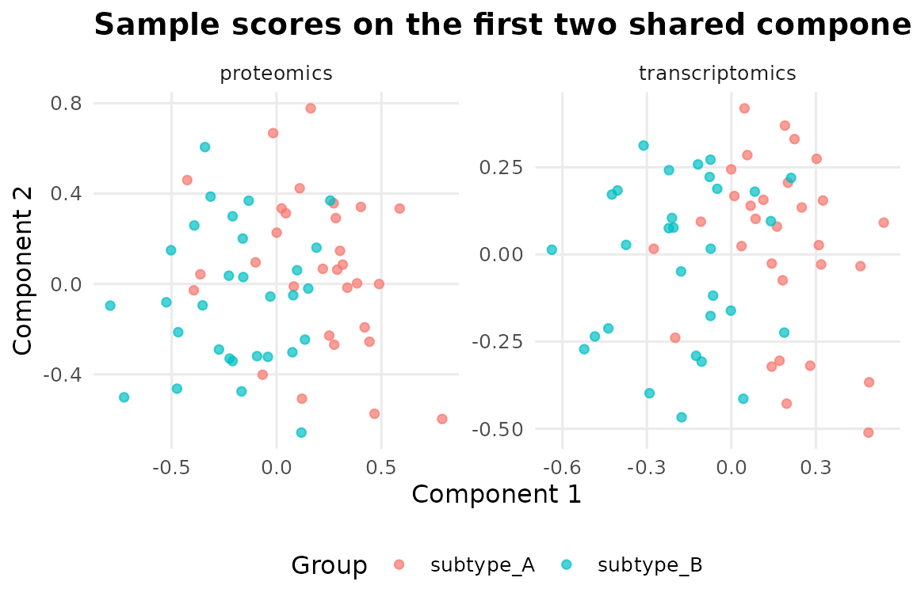
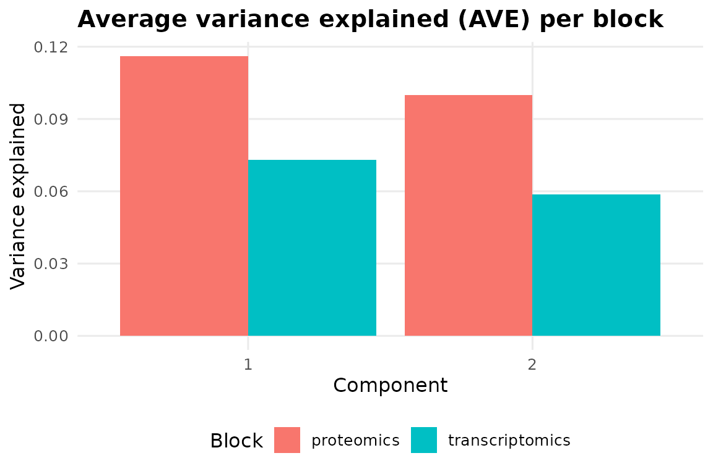
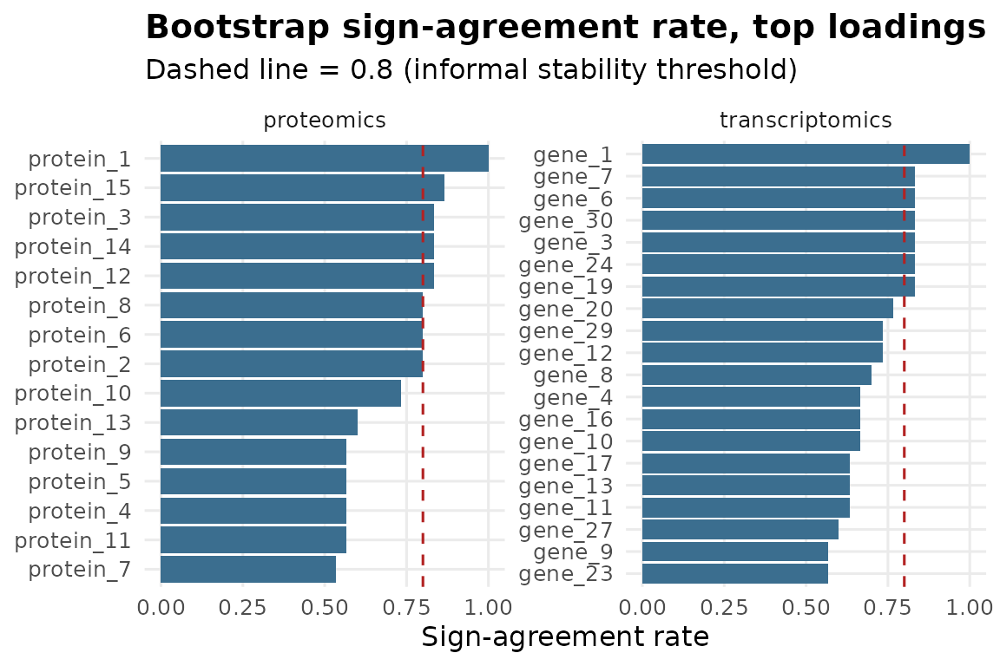

Getting Started: Multi-Omics Integration Pipeline
Source:vignettes/multiomics-pipeline.Rmd
multiomics-pipeline.RmdWhy not just PCA on the concatenated matrix?
Stacking a transcriptomics block with 20,000 features and a
proteomics block with 200 features into one matrix and running PCA gives
you a result dominated by whichever block has more features – not
necessarily the one with more signal.
integrate_multiomics() uses regularized generalized
canonical correlation analysis (RGCCA) instead, which finds components
that maximize covariation between blocks, so each layer
contributes based on how much it agrees with the others, not how large
it is.
A simulated example
set.seed(1)
n <- 60
sample_ids <- paste0("patient_", seq_len(n))
# two omics layers with a shared latent signal on the first axis
transcriptomics <- matrix(
rnorm(n * 30), nrow = n,
dimnames = list(sample_ids, paste0("gene_", 1:30))
)
proteomics <- matrix(
rnorm(n * 15), nrow = n,
dimnames = list(sample_ids, paste0("protein_", 1:15))
)
subtype <- factor(rep(c("subtype_A", "subtype_B"), each = n / 2))
shared_signal <- ifelse(subtype == "subtype_A", 1.5, -1.5) + rnorm(n, sd = 0.5)
transcriptomics[, 1] <- transcriptomics[, 1] + shared_signal
proteomics[, 1] <- proteomics[, 1] + shared_signal
fit <- integrate_multiomics(
blocks = list(transcriptomics = transcriptomics, proteomics = proteomics),
group = stats::setNames(as.character(subtype), sample_ids),
ncomp = 2,
n_boot = 30,
seed = 1
)
fit
#> <omicsuite multi-omics RGCCA integration pipeline>
#>
#> Blocks: transcriptomics, proteomics
#>
#> Diagnostic verdicts:
#> [OK ] sample_alignment All 60 samples were present in every block.
#> [INFO] variance_explained[transcriptomics] Component 1 explains 7.3% of variance within this block. This block is contributing a meaningful share of its own variance to the shared components. [see plots$variance_explained]
#> [INFO] variance_explained[proteomics] Component 1 explains 11.6% of variance within this block. This block is contributing a meaningful share of its own variance to the shared components. [see plots$variance_explained]
#> [FLAG] loading_stability[transcriptomics] Top 20 loadings had a mean bootstrap sign-agreement rate of 72.8% across 30 successful resamples. A non-trivial share of top loadings flip sign under resampling -- treat the specific feature ranking within this block cautiously, even if the block-level integration is otherwise sound. [see plots$stability]
#> [FLAG] loading_stability[proteomics] Top 15 loadings had a mean bootstrap sign-agreement rate of 72.7% across 30 successful resamples. A non-trivial share of top loadings flip sign under resampling -- treat the specific feature ranking within this block cautiously, even if the block-level integration is otherwise sound. [see plots$stability]
#> [INTP] interpretation[group_separation_transcriptomics] Kruskal-Wallis test of component 1 by group: H = 27.24, p = 0.0000. The supplied groups differ significantly on this block's shared component (p < 0.05) -- the integration is picking up something that lines up with the group labels. [see plots$block_scores]
#> [INTP] interpretation[group_separation_proteomics] Kruskal-Wallis test of component 1 by group: H = 20.60, p = 0.0000. The supplied groups differ significantly on this block's shared component (p < 0.05) -- the integration is picking up something that lines up with the group labels. [see plots$block_scores]Reading the verdict table
fit$verdicts
#> check verdict statistic
#> 1 sample_alignment pass 60.0000000
#> 2 variance_explained[transcriptomics] info 0.0731679
#> 3 variance_explained[proteomics] info 0.1161911
#> 4 loading_stability[transcriptomics] flagged 0.7283333
#> 5 loading_stability[proteomics] flagged 0.7266667
#> 6 interpretation[group_separation_transcriptomics] interpretation 27.2369399
#> 7 interpretation[group_separation_proteomics] interpretation 20.6008743
#> p_value
#> 1 NA
#> 2 NA
#> 3 NA
#> 4 NA
#> 5 NA
#> 6 1.799868e-07
#> 7 5.657027e-06
#> note
#> 1 All 60 samples were present in every block.
#> 2 Component 1 explains 7.3% of variance within this block. This block is contributing a meaningful share of its own variance to the shared components.
#> 3 Component 1 explains 11.6% of variance within this block. This block is contributing a meaningful share of its own variance to the shared components.
#> 4 Top 20 loadings had a mean bootstrap sign-agreement rate of 72.8% across 30 successful resamples. A non-trivial share of top loadings flip sign under resampling -- treat the specific feature ranking within this block cautiously, even if the block-level integration is otherwise sound.
#> 5 Top 15 loadings had a mean bootstrap sign-agreement rate of 72.7% across 30 successful resamples. A non-trivial share of top loadings flip sign under resampling -- treat the specific feature ranking within this block cautiously, even if the block-level integration is otherwise sound.
#> 6 Kruskal-Wallis test of component 1 by group: H = 27.24, p = 0.0000. The supplied groups differ significantly on this block's shared component (p < 0.05) -- the integration is picking up something that lines up with the group labels.
#> 7 Kruskal-Wallis test of component 1 by group: H = 20.60, p = 0.0000. The supplied groups differ significantly on this block's shared component (p < 0.05) -- the integration is picking up something that lines up with the group labels.
#> plot
#> 1 <NA>
#> 2 variance_explained
#> 3 variance_explained
#> 4 stability
#> 5 stability
#> 6 block_scores
#> 7 block_scoressample_alignment confirms no samples were silently
dropped when blocks were matched by row name.
variance_explained[<block>] is informational – it
tells you how much of each block’s own variance the shared components
capture, which is a quick way to spot a block that isn’t really
contributing to the integration.
loading_stability[<block>] is the one worth taking
seriously before reporting a feature ranking: it’s a case-resampling
bootstrap sign-agreement rate for each block’s top-loading features, not
just a fit statistic.
Do the shared components separate the subtypes?
plot(fit, which = "block_scores")
plot(fit, which = "variance_explained")
plot(fit, which = "stability")
head(fit$stability[order(-fit$stability$stability), ])
#> block feature original_loading stability
#> 1 transcriptomics gene_1 0.4444558 1.0000000
#> 21 proteomics protein_1 0.4992397 1.0000000
#> 24 proteomics protein_15 0.3315197 0.8666667
#> 2 transcriptomics gene_30 0.3705978 0.8333333
#> 3 transcriptomics gene_24 -0.3501053 0.8333333
#> 4 transcriptomics gene_6 0.3104568 0.8333333The features at the top of that sorted table are the ones whose contribution to the shared component survived resampling most consistently – a better place to start a follow-up biological interpretation than the raw loading magnitude alone.